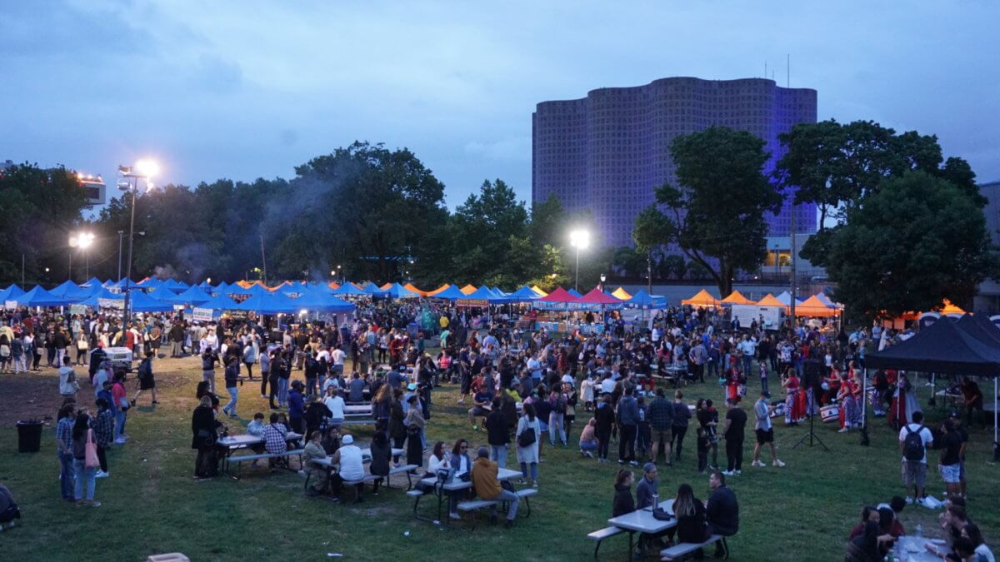

- 1) Central Park
- This is a free rooftop park located by the Hudson River. It provides amazing views of Lower Manhattan, mid-town Manhattan, and New Jersey. It is the best time to go at sunset so you can see NYC sunsets. Additionally, Chelsea Market is located nearby which you can get a lot of great food. Some other sites like Highline Park, Little Island, and the Vessel are nearby.
- 2) Queens Night Market
- This market is located in Queens near Flushing and is a pop-up market that happens only on Saturdays from 5pm to 12am. The types of foods here are very diverse, they include Tibetan, Japanese, Ethiopian, Venezuelan food and more. 